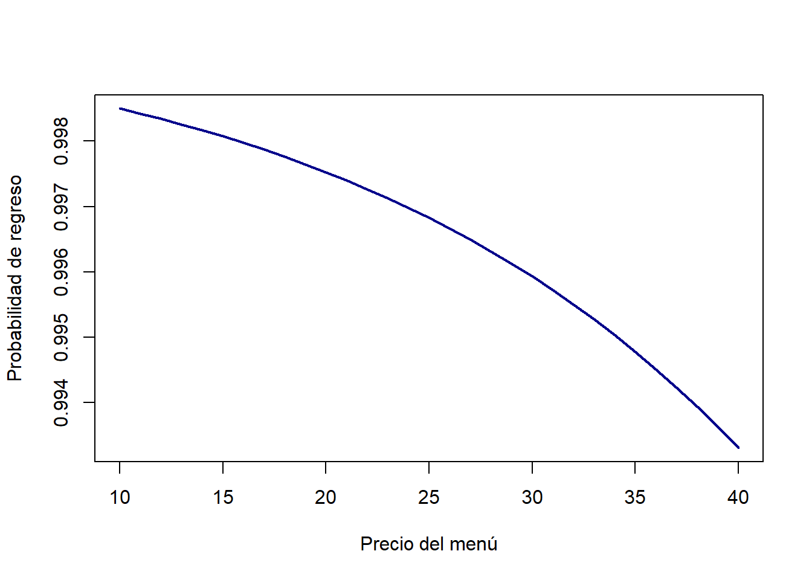

8 Modelos de probabilidad
Hasta ahora hemos trabajado con regresiones en las que la variable dependiente es continua: ventas, gasto promedio, calificaciones de clientes. Pero en la práctica, muchas decisiones importantes se expresan como un sí o no:
- ¿El cliente regresará al restaurante la próxima semana?
- ¿El nuevo plato es un éxito (se vende) o un fracaso (no se vende)?
- ¿El cliente recomienda el restaurante a un amigo o no?
Estas situaciones se modelan con variables binarias: toman el valor 1 cuando el evento ocurre y 0 cuando no.
En este capítulo introducimos modelos donde la variable respuesta es una probabilidad o una categoría, en lugar de una cantidad continua.
8.1 El primer intento: Modelo de Probabilidad Lineal (MPL)
Podemos intentar usar regresión lineal directamente, tratando la variable binaria como si fuera continua. El modelo se vería así:
\[ Pr(\text{Regresa}=1) = b_0 + b_1 \times Precio + b_2 \times Publicidad + \varepsilon \]
Aquí:
- \(b_1\) indica cómo cambia la probabilidad de regreso cuando aumenta el precio en 1 unidad.
- \(b_2\) mide el efecto de invertir más en publicidad.
Ejemplo en el restaurante:
- Cada $1 adicional en el precio del menú disminuye la probabilidad de regreso en 3 puntos porcentuales.
- Cada $100 en publicidad aumenta la probabilidad en 2 puntos porcentuales.
Advertencia
Problema: este modelo puede predecir probabilidades menores a 0 o mayores a 1, lo cual no tiene sentido.
8.2 La solución: Regresión Logística
Para asegurarnos de que las probabilidades siempre estén entre 0 y 1, usamos una transformación llamada función logística:
\[ Pr(\text{Regresa}=1) = \frac{1}{1 + e^{-(b_0 + b_1 \times Precio + b_2 \times Publicidad)}} \]
- Sin importar los valores de Precio o Publicidad, el resultado siempre es una probabilidad válida.
- La relación entre las variables y la probabilidad no es lineal, sino en forma de “S”: los cambios tienen más impacto en ciertos rangos y menos en otros.
8.3 Intuición con el restaurante 🍽️
Supongamos que estimamos el siguiente modelo:
\[ Pr(\text{Regresa}=1) = \frac{1}{1 + e^{-(2 - 0.05 \times Precio + 0.01 \times Publicidad)}} \]
Interpretación:
- Cada $1 más en el precio reduce la probabilidad de regreso en aproximadamente 5%.
- Cada $100 invertidos en publicidad aumentan la probabilidad en 1%.
Ejemplos:
- Menú a $20 y publicidad de $500 → probabilidad de regreso = 70%.
- Menú a $30 y misma publicidad → probabilidad de regreso = 55%.
8.4 ¿Cuándo usar el Modelo de Probabilidad Lineal (MPL) y cuándo la Regresión Logística?
Breve respuesta intuitiva:
- Usa el MPL para exploraciones rápidas o cuando quieras una lectura lineal sencilla de los datos. Es fácil de estimar y explicar. Sirve mejor para efectos generales.
- Usa la regresión logística cuando necesites predicciones de probabilidad coherentes (siempre entre 0 y 1) para cada individuo, o cuando la relación entre las variables y la probabilidad tenga curvatura (forma de “S”).
Más en detalle:
- ¿Por qué el MPL puede funcionar como primer paso?
- Es un modelo lineal simple: el coeficiente se interpreta directamente como “cambio en la probabilidad (puntos porcentuales) por unidad”.
- Es útil para explorar señales en los datos y para comunicación rápida cuando las predicciones quedan mayoritariamente dentro de 0–1.
- ¿Por qué puede fallar el MPL?
- Puede predecir probabilidades menores que 0 o mayores que 1.
- No captura la naturaleza no lineal típica de muchas probabilidades (efectos que se saturan).
- Sus errores estándar pueden ser incorrectos por la heterocedasticidad inherente a variables binarias.
- ¿Por qué la regresión logística suele ser mejor?
- La transformación logística garantiza probabilidades en [0,1].
- Modela la curvatura (efectos más fuertes en ciertas zonas y más débiles en los extremos).
- Es el estándar práctico cuando se requiere rigor en predicción y en inferencia para variables binarias.
Regla práctica:
- Si necesitas rapidez y las probabilidades estimadas caen dentro de 0.1–0.9 sin comportamientos extraños, el MPL puede servir para explorar. Pero si necesitas predicciones confiables, interpretación robusta y valores fuera del rango son posibles, usa logística.
8.5 Interpretación: coeficientes, log-odds y efectos marginales (explicado fácil)
Lo esencial de forma muy simple:
- En regresión lineal un coeficiente \(β_j\) se lee directo: un aumento de 1 en \(X_j\) cambia la probabilidad en \(β_j\) puntos porcentuales.
- En regresión logística NO se lee así. Los coeficientes actúan sobre los log-odds (el logaritmo de las odds), no sobre la probabilidad directa.
¿Qué quiere decir eso en palabras? - Piensa que la regresión logística primero calcula una “puntuación” \((x \times β)\). Esa puntuación se transforma con la función logística para producir una probabilidad entre 0 y 1. El coeficiente \(β_j\) dice cuánto cambia la puntuación (el log-odds), pero ese cambio no se traduce siempre en la misma variación de probabilidad: depende del punto donde estés.
Efectos marginales — la forma práctica de leer resultados:
Para saber cuánto cambia la probabilidad cuando \(X_j\) aumenta en 1 unidad necesitamos calcular el efecto marginal, que combina \(β_j\) con la probabilidad actual p:
cambio en probabilidad ≈ \[ β_j × p × (1 - p)\]
- Observa que p(1-p) es máximo cuando p ≈ 0.5, y pequeño cuando p está cerca de 0 o 1. Esto significa que un mismo \(β_j\) puede implicar cambios grandes en la probabilidad si estamos en la zona media, y cambios pequeños si estamos en los extremos.
Ejemplo muy concreto: - Si \(β_precio = -0.05\) y para un cliente \(p = 0.5\), el efecto aproximado de subir 1 unidad el precio es:
\(-0.05 × 0.5 × 0.5 = -0.0125\) → una reducción de \(~1.25\) puntos porcentuales en la probabilidad de regreso en ese punto.
Cómo reportarlo en práctica:
- Efecto marginal en la media (MEM): calcula \(p\) en las medias de las covariables y aplica la fórmula. Fácil de explicar.
- Efecto marginal promedio (AME): calcula el efecto marginal por observación y promedia; refleja el efecto medio en la muestra.
- Cambio discreto para variables dummy: calcula la diferencia en la probabilidad predicha al pasar la variable de 0 a 1.
Otra forma común: odds y odds ratio (explicado fácil)
Cuando se estima un modelo binomial (logístico) los coeficientes se obtienen en la escala de los log-odds. Para pasar a una interpretación más intuitiva aplicamos la exponencial de ese coeficiente:
- OR = \(exp(β_j)\)
Esto se denomina odds ratio (OR) y compara cómo cambian las odds cuando una variable aumenta en una unidad.
Definiciones claras e intuitivas:
Odds: la razón entre la probabilidad de éxito y la probabilidad de fracaso.
odds = \(p / (1 - p)\)
donde \(p\) es la probabilidad de que ocurra el evento de interés.
Odds ratio (OR): la razón entre las odds en dos grupos o condiciones.
OR = odds en el grupo A / odds en el grupo B
Si OR > 1, las odds son mayores en el numerador; si OR < 1, las odds son menores.
Ejemplo simple e intuitivo:
- Si \(exp(β_precio) = 0.95\), eso significa que aumentar el precio en 1 unidad multiplica las odds por \(0.95\) (una reducción del 5% en las odds). No es exactamente la misma reducción en la probabilidad, pero da una idea clara de dirección y magnitud relativa.
Consejo práctico para comunicar resultados:
- Usa OR cuando quieras mostrar «cuánto cambian las odds» (útil en reportes) y complementa siempre con efectos marginales o cambios en probabilidades para audiencias no técnicas.
Resumen para el lector final:
- MPL: simple y útil para exploración, pero con límites (probabilidades fuera de rango, errores en inferencia).
- Logística: un poco más compleja de interpretar, pero produce probabilidades coherentes; siempre traduzcas β a efectos marginales o a cambios en probabilidad para comunicar resultados a audiencias no técnicas.